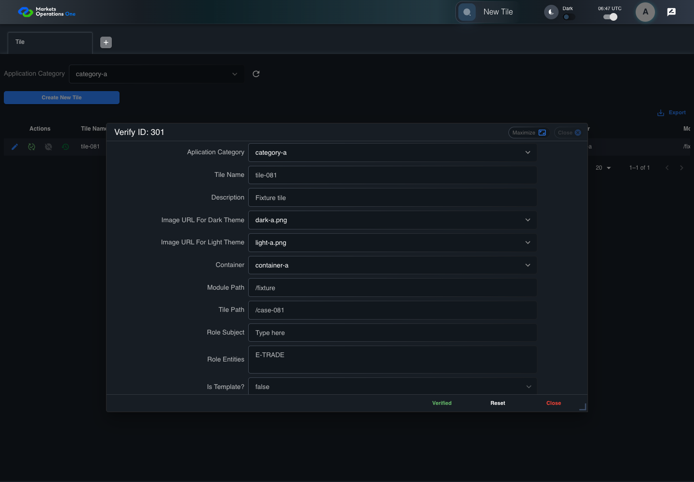
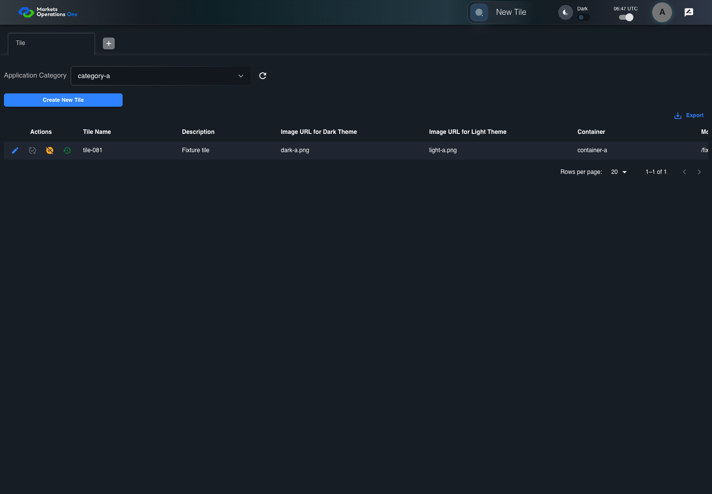

BFF-ADM-081 current BFF administration through actual UI
FAIL · application/run-072/bff-adm-081-current-bff-administration-through-actual-ui-df76b877e515-attempt-1 · ACTUAL_APPLICATION_LOCAL_SERVICES
Actual current React and exact-current BFF admin controllers/services/JPA with actual migration DDL in disposable PostgreSQL. Controlled OUD/EMS2 identities and local Spring bootstrap. Fixture SQL seeds/mutates isolated records; service errors are actual database errors. Undefined agreed messages remain unresolved acceptance.
2026-10-22T06:47:51.660Z to 2026-10-22T06:48:02.974Z
Assertions and result · Artifact manifest · Exact run inputs and source hashes
Result SHA-256:be619ab403a894424d198712fd6dfc183643c429ac995aff0393e00c0c6f2fc8Retained failure details
[
{
"message": "Error: \u001b[2mexpect(\u001b[22m\u001b[31mlocator\u001b[39m\u001b[2m).\u001b[22mtoBeVisible\u001b[2m(\u001b[22m\u001b[2m)\u001b[22m failed\n\nLocator: locator('.MuiAlert-root').filter({ has: locator('.MuiAlert-message') })\nExpected: visible\nTimeout: 5000ms\nError: element(s) not found\n\nCall log:\n\u001b[2m - Expect \"toBeVisible\" locator('.MuiAlert-root').filter({ has: locator('.MuiAlert-message') }) with timeout 5000ms\u001b[22m\n\u001b[2m - waiting for locator('.MuiAlert-root').filter({ has: locator('.MuiAlert-message') })\u001b[22m\n",
"stack": "Error: \u001b[2mexpect(\u001b[22m\u001b[31mlocator\u001b[39m\u001b[2m).\u001b[22mtoBeVisible\u001b[2m(\u001b[22m\u001b[2m)\u001b[22m failed\n\nLocator: locator('.MuiAlert-root').filter({ has: locator('.MuiAlert-message') })\nExpected: visible\nTimeout: 5000ms\nError: element(s) not found\n\nCall log:\n\u001b[2m - Expect \"toBeVisible\" locator('.MuiAlert-root').filter({ has: locator('.MuiAlert-message') }) with timeout 5000ms\u001b[22m\n\u001b[2m - waiting for locator('.MuiAlert-root').filter({ has: locator('.MuiAlert-message') })\u001b[22m\n\n at BffAdminApp.errorAlert (/Users/lushevol/code/github/ratan-release-impact/workbench/e2e/support/bff-admin-app.ts:166:169)\n at /Users/lushevol/code/github/ratan-release-impact/workbench/e2e/audit-specs/bff-admin.spec.ts:49:166\n at AuditCapture.step (/Users/lushevol/code/github/ratan-release-impact/workbench/e2e/support/audit-fixture.ts:94:21)\n at /Users/lushevol/code/github/ratan-release-impact/workbench/e2e/audit-specs/bff-admin.spec.ts:18:27",
"location": {
"file": "/Users/lushevol/code/github/ratan-release-impact/workbench/e2e/support/bff-admin-app.ts",
"column": 169,
"line": 166
},
"snippet": "\u001b[90m at \u001b[39m../support/bff-admin-app.ts:166\n\n 164 | }\n 165 | async assertUnchanged():Promise<void>{expect(await this.snapshot()).toEqual(this.expectedPersisted);expect(await this.gridSnapshot()).toEqual(this.initialGrid);}\n> 166 | async errorAlert(exact?:string):Promise<void>{const alert=this.page.locator('.MuiAlert-root').filter({has:this.page.locator('.MuiAlert-message')});await expect(alert).toBeVisible();await expect(alert).toHaveClass(/MuiAlert-standardError|MuiAlert-filledError|MuiAlert-outlinedError/);if(exact)await expect(alert.locator('.MuiAlert-message')).toHaveText(exact);else {const mutation=[...this.requests].reverse().find(request=>['create','update','audit'].includes(request.operation));expect(mutation?.status).toBeGreaterThanOrEqual(400);await expect(alert.locator('.MuiAlert-message')).not.toHaveText('');await this.audit.record('undefined-message-contract',{canonical:'Agreed message is unavailable. Only real error response and visible nonempty error are characterized.',actual:await alert.innerText()});}}\n | ^\n 167 | async cell(name:string,id:string){return this.ui.reveal(adminFields[name]??name,id);}\n 168 | }\n 169 |"
}
]Machine observations
- actual-identity-projection.json
c65b0afd205fec7f4a86c6f85cf43d41792af5e50c47c60eb9db5a6cc71f9a8c - baseline-inputs.json
b5177daeb8974cfe9d2e5e3793b01d43a79737f9d8df57401211ec576498d4c7 - bff-boundary.json
45c79eb139edbc9328db70af2ebea7b1f4329bcd7b33cd4b359bdecf7652b94b - committed-ui-submission-comparisons.json
754a31ab4e06423cc2d76e7356e33978e31315f10cf59690d8e8daac2be20f61 - fixture-step-10.json
8f7f14882a1be3bea24147114578a5102107bf3cc91127cb9a6536bfe2e29adb - fixture-step-11.json
b0f45aee6157b9ee28e3971943ec5f220a4cf38306ee6d0d3cdb7e8abbf72645 - fixture-step-6.json
4715957a366eea3e83760c56344fcf7daa7b7ef77c138f6cf97cd7b77c3a7be9 - fixture-step-7.json
11f3ab99cbbc7757e3a7c65567d45303578616b4c9249815f06ba0214c9c9c3b - fixture-step-8.json
3cea39f33263073d9185ea0f78a9ebf3da8070642980a24c6274db5d6f48468c - fixture-step-9.json
de27e24e715e8b992001baf9146a9a67ed6844bc82cb979bff9a26cb1629bac3 - inactive-reference.json
3dc5b5a3b796f9bd50d0c316b850201696669f024ca8c6f13d952157f55491fa - initial-persisted-records.json
4b6f3586cb2c59baf6a91178a25c6798d5af93e47b91aad4306e10cbd48b3739 - persisted-after-submit.json
3ee019cee2abde75fe57cfeea4e6edd75001db0f81733bb100e61dcbb8e9d150 - reference-snapshot-3.json
478dfa84502dc75b0687579dac98386139093dd36a47f0530b595f32b10b7afe - reference-snapshot-4.json
c6c04b7a9e44865adb492e82626b985b21ff93bce4364f30bedb5627e596ecc2 - rejection-or-policy-observation.json
9dcb9e9bec8044721e608ed977093ecc6be4e36d0e37af6ceb6c0995de69c0a2 - ui-origin-bff-requests.json
367bbf8f799691c6ab22a93d2e00c7fe1d99f2985858606b47c9119091ef89ea
Screenshot capture: CAPTURED. Named frames: 19.
Step screenshot evidence: INCOMPLETE. 18/20 canonical steps have execution screenshots.
Step 19 has no screenshot from an executed step. Step 20 has no screenshot from an executed step.
Canonical step timeline
Given Admin B uses subject "admin-b" with role "FMO_ADMIN" in an isolated authenticated browser
Execution: PASSED.1. step-01 Visible state after step 1: Given Admin B uses subject "admin-b" with role "FMO_ADMIN" in an isolated authenticated browser
2026-10-22T06:47:54.014Z · 1440×1000
Step: /Users/lushevol/code/github/ratan-release-impact/workbench/tasks/ui-test-coverage-20261022/test-cases.md:18136
SHA-256:6afe30cdaf0fbf11d27778db07e7fd3f0d50364f6caafb8596fa35d435824470And the controlled Tile fixture records the initial grid rows and persisted values
Execution: PASSED.2. step-02 Visible state after step 2: And the controlled Tile fixture records the initial grid rows and persisted values
2026-10-22T06:47:54.205Z · 1440×1000
Step: /Users/lushevol/code/github/ratan-release-impact/workbench/tasks/ui-test-coverage-20261022/test-cases.md:18137
SHA-256:6c347e8de4ca13da3a3e266ab93ce1b85a924e95ff5aff1b2cae9ea365e3f7a7And Category 101 has label "category-a" and Import Map 201 has Module Name "container-a"
Execution: PASSED.3. step-03 Visible state after step 3: And Category 101 has label "category-a" and Import Map 201 has Module Name "container-a"
2026-10-22T06:47:54.310Z · 1440×1000
Step: /Users/lushevol/code/github/ratan-release-impact/workbench/tasks/ui-test-coverage-20261022/test-cases.md:18138
SHA-256:4b46d4dfd680f2797b2dd40e5bceb7bf00fb7f648aa22de0c571c8ccb45c3b7fAnd both references belong to "FMO_ADMIN" and the Tile page category filter value is Category 101
Execution: PASSED.4. step-04 Visible state after step 4: And both references belong to "FMO_ADMIN" and the Tile page category filter value is Category 101
2026-10-22T06:47:54.402Z · 1440×1000
Step: /Users/lushevol/code/github/ratan-release-impact/workbench/tasks/ui-test-coverage-20261022/test-cases.md:18139
SHA-256:aff19cce36d3fe0e0aa08c28a730e6b3491ea5cfd276255f4f647822e7593589And the Tile grid has record "301" owned by "FMO_ADMIN"
Execution: PASSED.5. step-05 Visible state after step 5: And the Tile grid has record "301" owned by "FMO_ADMIN"
2026-10-22T06:47:54.500Z · 1440×1000
Step: /Users/lushevol/code/github/ratan-release-impact/workbench/tasks/ui-test-coverage-20261022/test-cases.md:18140
SHA-256:94980389070b9b49128bd6573512819e540a6d46d449cd32061544f635645b73And the baseline fixture data defines "Tile Name" as "tile-081"
Execution: PASSED.6. step-06 Visible state after step 6: And the baseline fixture data defines "Tile Name" as "tile-081"
2026-10-22T06:47:54.599Z · 1440×1000
Step: /Users/lushevol/code/github/ratan-release-impact/workbench/tasks/ui-test-coverage-20261022/test-cases.md:18141
SHA-256:200318e9f82ce85f071c65c45757af18c0850cefa5bc19022568b49696e7fa81And the baseline fixture data defines "Module Path" as "/fixture"
Execution: PASSED.7. step-07 Visible state after step 7: And the baseline fixture data defines "Module Path" as "/fixture"
2026-10-22T06:47:54.682Z · 1440×1000
Step: /Users/lushevol/code/github/ratan-release-impact/workbench/tasks/ui-test-coverage-20261022/test-cases.md:18142
SHA-256:3e812b4644292a6383e6cbd8acfe9af535393c68047830f6558d11b94ef4fe96And the baseline fixture data defines "Tile Path" as "/case-081"
Execution: PASSED.8. step-08 Visible state after step 8: And the baseline fixture data defines "Tile Path" as "/case-081"
2026-10-22T06:47:54.765Z · 1440×1000
Step: /Users/lushevol/code/github/ratan-release-impact/workbench/tasks/ui-test-coverage-20261022/test-cases.md:18143
SHA-256:4f9d9afbbf903e4dcc60787d14429dc538d35dbe66152e98cae9590d308c5544And the baseline fixture data defines "Role Entities" as "E-TRADE"
Execution: PASSED.9. step-09 Visible state after step 9: And the baseline fixture data defines "Role Entities" as "E-TRADE"
2026-10-22T06:47:54.861Z · 1440×1000
Step: /Users/lushevol/code/github/ratan-release-impact/workbench/tasks/ui-test-coverage-20261022/test-cases.md:18144
SHA-256:f58c0b81e7bb2f02a81b77e28bf6ca7e383c96740a9c980c2dc8617f1052aab8And the baseline fixture data defines "Filter Rule" as ""
Execution: PASSED.10. step-10 Visible state after step 10: And the baseline fixture data defines "Filter Rule" as ""
2026-10-22T06:47:54.945Z · 1440×1000
Step: /Users/lushevol/code/github/ratan-release-impact/workbench/tasks/ui-test-coverage-20261022/test-cases.md:18145
SHA-256:f922cf5101f5a7f025ea5b553743cdbf86ed6b21458f194d376850d0a57b9726And the baseline Tile references use "Aplication Category" "category-a" and "Container" "container-a"
Execution: PASSED.11. step-11 Visible state after step 11: And the baseline Tile references use "Aplication Category" "category-a" and "Container" "container-a"
2026-10-22T06:47:55.040Z · 1440×1000
Step: /Users/lushevol/code/github/ratan-release-impact/workbench/tasks/ui-test-coverage-20261022/test-cases.md:18146
SHA-256:27bd3dabae47d3db7b1c1f0ccce8bf1850cc8e1a08b85eb1533dd78e92eba05dAnd Tile record "301" is inactive when this browser loads its grid
Execution: PASSED.12. step-12 Visible state after step 12: And Tile record "301" is inactive when this browser loads its grid
2026-10-22T06:47:55.108Z · 1440×1000
Step: /Users/lushevol/code/github/ratan-release-impact/workbench/tasks/ui-test-coverage-20261022/test-cases.md:18147
SHA-256:626814baa733e983624ab0ce0becdc8993c4d8aaa2ae5008e3cf6c1ed1e4be2cAnd its stored "updatedBy" value is "admin-a"
Execution: PASSED.13. step-13 Visible state after step 13: And its stored "updatedBy" value is "admin-a"
2026-10-22T06:47:55.190Z · 1440×1000
Step: /Users/lushevol/code/github/ratan-release-impact/workbench/tasks/ui-test-coverage-20261022/test-cases.md:18148
SHA-256:1f49ecde7806e60a05832019bde90d8d88d1e54511381d1eb897c7990e3fc756And Category 101 is inactive
Execution: PASSED.When Admin B clicks the button labeled "Verify" in the Tile grid row with "Record Id" "301"
Execution: PASSED.
15. step-15 Visible state after step 15: When Admin B clicks the button labeled "Verify" in the Tile grid row with "Record Id" "301"
2026-10-22T06:47:55.764Z · 1440×1000
Step: /Users/lushevol/code/github/ratan-release-impact/workbench/tasks/ui-test-coverage-20261022/test-cases.md:18150
SHA-256:66d1152ab9171c2c4b5c1c82156cd789debaa7bb6d56623d08c951e0a610ce8aThen the dialog titled "verify ID: 301" is visible on the Tile administration page
Execution: PASSED.16. step-16 Visible state after step 16: Then the dialog titled "verify ID: 301" is visible on the Tile administration page
2026-10-22T06:47:55.950Z · 1440×1000
Step: /Users/lushevol/code/github/ratan-release-impact/workbench/tasks/ui-test-coverage-20261022/test-cases.md:18151
SHA-256:52c91a55868e0509657c6a80a1e90164c67ca8ad5e455cc54c90755ae2762f90When Admin B clicks the button labeled "Verified" in dialog "verify ID: 301"
Execution: PASSED.
17. step-17 Visible state after step 17: When Admin B clicks the button labeled "Verified" in dialog "verify ID: 301"
2026-10-22T06:47:56.293Z · 1440×1000
Step: /Users/lushevol/code/github/ratan-release-impact/workbench/tasks/ui-test-coverage-20261022/test-cases.md:18152
SHA-256:e7c1becd47f74f418ddcabfa4db5f557f71dd4eca5fe9fdac478b33190fc0430Then the alert with severity "error" in the portal snackbar displays the agreed message for an inactive-reference error
Execution: FAILED.18. step-18-failure Visible state when step 18 failed. Later steps did not execute.
2026-10-22T06:48:01.450Z · 1440×1000
Step: /Users/lushevol/code/github/ratan-release-impact/workbench/tasks/ui-test-coverage-20261022/test-cases.md:18153
SHA-256:ab87c6f4225eb46c81763caf8807aada028971ed970d9dfc0f96b7abe9840232And in the Tile data grid with column "Record Id", the "Verified?" cell for Tile record "301" has status tooltip "Unverified or Deactivated" on the Tile administration page
Execution: NOT_EXECUTED.No screenshot is recorded for this step. No executed state is claimed.
And the persisted-record readback for record "301" has "active" equal to false
Execution: NOT_EXECUTED.No screenshot is recorded for this step. No executed state is claimed.
Additional named frames
Screenshots establish visible state only. Assertions and traces support functional claims.